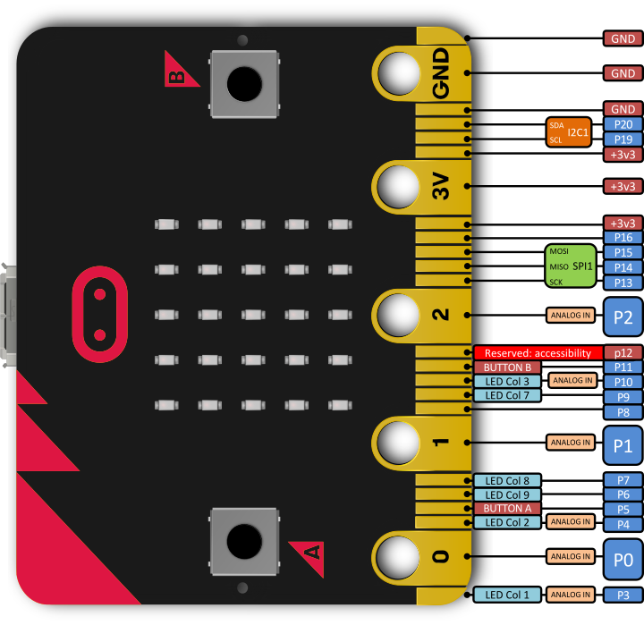

Medida analógicas en pines de micro:bit
Micro:bit tiene una serie de pines accesibles mediante pinzas de cocodrilo, 0, 1 y 2, además de alimentación a 3V y GND. Estos pines en Micro:bit son GPIO (general purpose IO), por tanto se pueden usar como entradas (lectura de datos de sensores) tanto analógicas como digitales y también como salida (para conectar en ellos actuadores).
En nuestro reto haremos una lectura analógica del pin 0, siendo capaz de medir un voltaje comprendido entre 0 y 3,3 Voltios, que se corresponde respectivamente a unos valores de lectura entre 0 y 1023. ¡OJO! no podemos hacer lecturas superiores a 3V (pilas que superen ese voltaje), ya que ponemos en peligro el pin y la placa.
